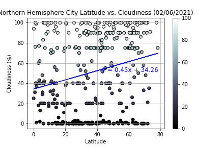
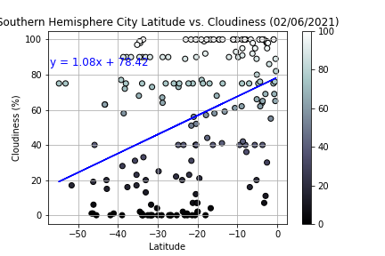

Latitude vs Cloudiness

General Latitude vs Cloudiness Graph

Northern Latitude vs Cloudiness Graph

Southern Latitude vs Cloudiness Graph
Visually, we see three graphs with two of them having linear regression lines as well. The first one shows the relationship between all latitudes and cloudiness (General Latitude vs Cloudiness Graph), the following one shows the relationship between Northern latitudes and cloudiness (Northern Latitude vs Cloudiness Graph), and the final one shows the relationship between Southern latitudes and cloudiness (Southern Latitude vs Cloudiness Graph). Correlation between latitude and cloudiness in either hemisphere is positive, but also quite weak. However, it appears to be slightly more cloudy the farther away from the equator the city is.